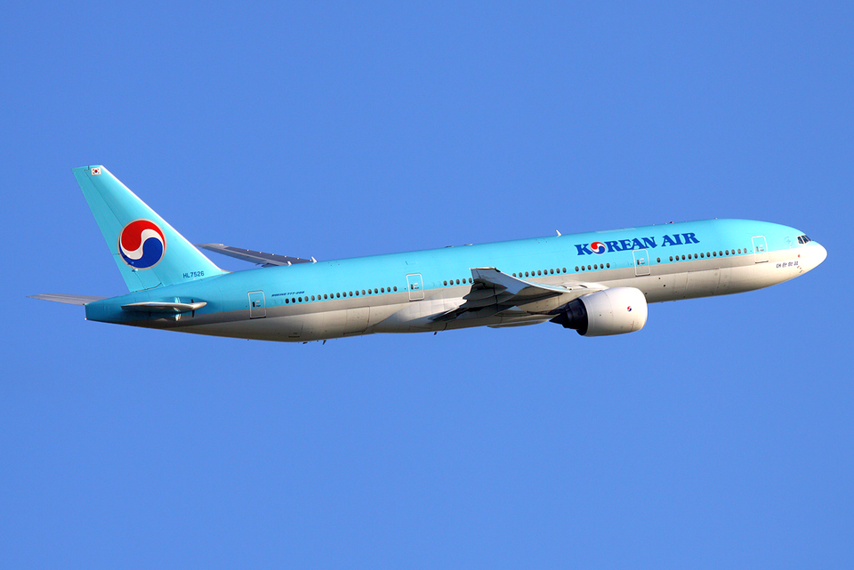
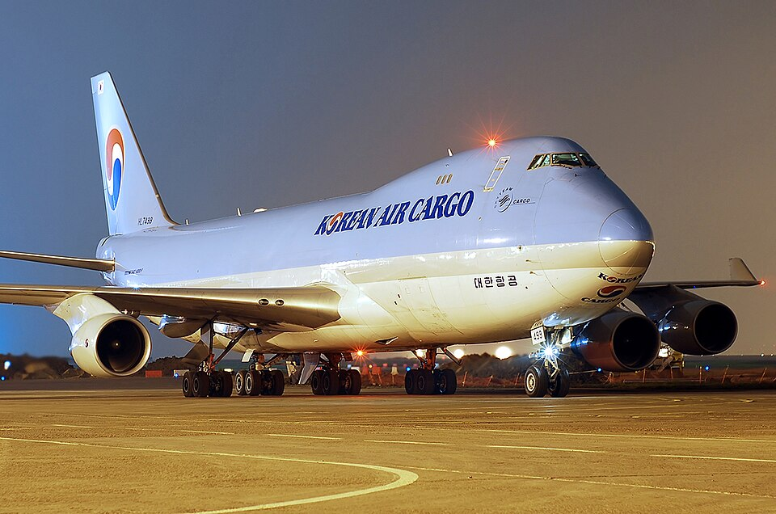

설립연도
1962년
국내외 여객과 화물을 실어 나르는 한국 최대 항공사예요. 항공 화물에서는 세계 최대급이고, 군용기 정비·무인기 같은 항공우주 사업도 해요. 2024년 12월 아시아나항공을 자회사로 편입했고, 2026년 12월 17일 두 회사를 하나로 합친 통합 대한항공이 출범할 예정이에요.
칸에 마우스를 올리거나 누르면 자세한 설명을 볼 수 있어요.

인천을 중심으로 미주·유럽·아시아 등 전 세계로 여객기를 띄워요. 매출에서 가장 큰 부분이에요.
대표 예국제선·국내선, 스카이팀 제휴

반도체·전자제품 같은 고가 화물을 비행기로 실어 날라요. 대한항공은 국제 항공 화물에서 세계 최대급 항공사예요.
대표 예화물 전용기, 여객기 화물칸
군용기를 정비·개량하고, 무인기를 개발하며, 보잉·에어버스 여객기 부품을 만들어요.
대표 예군용기 정비, 무인기, 항공기 부품
아시아나항공을 자회사로 두고 있고, 저비용항공사 진에어 등도 거느리고 있어요. 아시아나항공은 2026년 12월 대한항공에 합쳐질 예정이에요.
대표 예아시아나항공, 진에어
| 기간 | 매출 | 영업이익 | 순이익 |
|---|
사업마다 겨루는 상대가 달라요